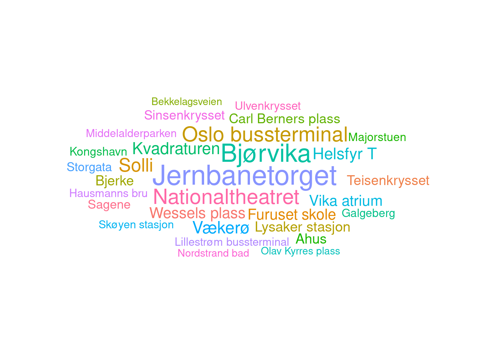

person1_url <- "https://swapi.dev/api/people/1/"
readLines(person1_url)APIs
Although web pages in .html are what we often see with our eyes when using a browser, it is not necessarily always the case that this is the best way to scrape data. Depending on which website and data you are interested in, there are often back-end databases from which the websites retrieve information based on the user’s clicks. Many such websites have an Application Programming Interface (API) available, which you can use relatively freely. And some websites are themselves an API. Take for example the Star Wars API, which is a database of data on characters, worlds, movies, etc., in the Star Wars universe.
The front page of SWAPI shows how, for example, you can retrieve data about a person:
[1] "{\"name\":\"Luke Skywalker\",\"height\":\"172\",\"mass\":\"77\",\"hair_color\":\"blond\",\"skin_color\":\"fair\",\"eye_color\":\"blue\",\"birth_year\":\"19BBY\",\"gender\":\"male\",\"homeworld\":\"https://swapi.dev/api/planets/1/\",\"films\":[\"https://swapi.dev/api/films/1/\",\"https://swapi.dev/api/films/2/\",\"https://swapi.dev/api/films/3/\",\"https://swapi.dev/api/films/6/\"],\"species\":[],\"vehicles\":[\"https://swapi.dev/api/vehicles/14/\",\"https://swapi.dev/api/vehicles/30/\"],\"starships\":[\"https://swapi.dev/api/starships/12/\",\"https://swapi.dev/api/starships/22/\"],\"created\":\"2014-12-09T13:50:51.644000Z\",\"edited\":\"2014-12-20T21:17:56.891000Z\",\"url\":\"https://swapi.dev/api/people/1/\"}".json
Here, the data format looks very different than a .html because .html is a bad way to store data. Rather, the vast majority of APIs use formats such as .xml and .json. In SWAPI’s case, we get data in .json format. This format does not lend itself very well to reading with readLines(). But, as always, someone has made a package that parses data into .json for us:
library(jsonlite)
person1 <- read_json(person1_url)
names(person1) [1] "name" "height" "mass" "hair_color" "skin_color"
[6] "eye_color" "birth_year" "gender" "homeworld" "films"
[11] "species" "vehicles" "starships" "created" "edited"
[16] "url" class(person1)[1] "list"person1$name[1] "Luke Skywalker"person1$starships[[1]]
[1] "https://swapi.dev/api/starships/12/"
[[2]]
[1] "https://swapi.dev/api/starships/22/"Elements such as starships, homeworld and films link to other parts of the API, from which further data can be extracted if desired.
Below you will find a slightly longer example of a potential workflow for SWAPI, which you can experiment with:
Code
###################################################
### SWAPI as an example for .json-scraping in R ###
###################################################
library(jsonlite) # Package for structuring json
library(httr) # Package for testing urls
# SWAPI base url -- list over availabel data sources
base_swapi_url <- "https://swapi.dev/api/"
# Downloading data sources
swapi_base <- read_json(base_swapi_url)
# See which elements are in the list
names(swapi_base)
# Downloading a list of people
swapi_people <- read_json(paste0(base_swapi_url, "people/"))
# Checks the structure of people
# listviewer::jsonedit(swapi_people)
# There are 82 people in "count"
swapi_people$count
# Creates an empty list
swapi_people_individuals <- list()
# Loops over the numbers 1 through 82
for(i in 1:swapi_people$count){
# Progressbar
it <- 100 * (i / swapi_people$count)
cat(paste0(sprintf("%.2f%% ", it), "\r"))
# Testing urls (e.g 17 is empty)
tmp <- GET(paste0(base_swapi_url, "people/", i, "/"))
# If the status code on the request is not 200 (sucess),
# give NULL and proceed to the next i
if(tmp$status_code != 200){
swapi_people_individuals[[i]] <- NULL
next
}
# Insert data on person i
swapi_people_individuals[[i]] <- read_json(tmp$url)
}
# Binding all persons into one data.frame()
# (`x[1:8]` subseets the first 8th elemtents in each list element.)
swapi_people_df <- purrr::map_df(swapi_people_individuals,
function(x) data.frame(x[1:8]))
# Table over eye color and gender
table(swapi_people_df$eye_color, swapi_people_df$gender)
Tip
If you are working with .json files that are quite unmanageable, is to use The listviewer package. It provides a very clear visual tree of the data..
.xml
The second data format most common in APIs is .xml. Lets use public transport stops in Oslo via the Entur API API as an example. .xml is quite similar to .html, just easier to work with (mostly).
The first thing we need to do is download data locally to our machine – there is quite a lot of data to work with here. The code snippet below checks if we have downloaded the file before and only downloads it if it is not already there. We then only need to download the file once – which is fine in this and most cases.
if(file.exists("../data/apis/ruter.xml") == FALSE){
download.file(url = "https://api.entur.io/realtime/v1/rest/et?datasetId=RUT",
destfile = "../data/04-anskaff_tekst/ruter.xml")
}We will use parts of the .xml file, which is a bit too large to open in its entirety, to find out which stops in Oslo most lines go through. These parts look like this:
Code
# This is a Unix command that makes .xml files a little nicer when we print
# them in the console
xmllint --encode utf8 --format ../data/apis/ruter.xml | sed -n 1185,1247p<RecordedCalls>
<RecordedCall>
<StopPointRef>NSR:Quay:8107</StopPointRef>
<Order>1</Order>
<StopPointName>Lillestrøm bussterminal</StopPointName>
<AimedDepartureTime>2022-08-03T13:50:00+02:00</AimedDepartureTime>
<ActualDepartureTime>2022-08-03T13:50:00+02:00</ActualDepartureTime>
</RecordedCall>
<RecordedCall>
<StopPointRef>NSR:Quay:9371</StopPointRef>
<Order>2</Order>
<StopPointName>Eikeliveien</StopPointName>
<AimedArrivalTime>2022-08-03T13:52:00+02:00</AimedArrivalTime>
<ActualArrivalTime>2022-08-03T13:52:00+02:00</ActualArrivalTime>
<AimedDepartureTime>2022-08-03T13:52:00+02:00</AimedDepartureTime>
<ActualDepartureTime>2022-08-03T13:52:00+02:00</ActualDepartureTime>
</RecordedCall>
. . .
</RecordedCalls>It is somewhat similar to .html in writing, but is a lot more structured.
The next thing we need to do is read the local .xml file. We do that with the same function we use on front-end .html pages: rvest::read_html():
library(rvest)
ruter <- read_html("../data/04-anskaff_tekst/ruter.xml")We are now free to extract the data we want from the file. In our case, we want all stops on every public transport route in Oslo. These are found within <recordedcall> . . . </recordedcall>. The code below may seem a little advanced at first glance, but a tip to see what happens inside the function can be to create the object x as the first list element in stop1, then execute each line inside the function only on this element.
1stops <- ruter %>% html_elements("recordedcall")
2all_stops <- lapply(stops, function(x){
tibble::tibble(
3 stop_id = x %>% html_elements("stoppointref") %>% html_text(),
4 order = x %>% html_elements("order") %>% html_text(),
5 stopp_name = x %>% html_elements("stoppointname") %>% html_text(),
6 aimed_dep = x %>% html_elements("aimeddeparturetime") %>% html_text(),
7 actual_dep = x %>% html_elements("actualdeparturetime") %>% html_text()
)
})
8alle_stopp <- bind_rows(alle_stopp)- 1
-
Splits the .xml document into each part contained within
<recordedcall> . . . </recordedcall> - 2
- For each of these elements we create a tibble() with …
- 3
- Id for the stop
- 4
- Order in route
- 5
- Stop name
- 6
- Expected time of departure
- 7
- Actual time of departure
- 8
- Ties together all the stops
Now we have a dataset we can use for visualization. For instance, a word cloud:
# Viser data
head(all_stops)# A tibble: 6 × 5
stop_id order stopp_name aimed_dep actual_dep
<chr> <chr> <chr> <chr> <chr>
1 NSR:Quay:8107 1 Lillestrøm bussterminal 2022-08-03T13:50:00+… 2022-08-0…
2 NSR:Quay:9371 2 Eikeliveien 2022-08-03T13:52:00+… 2022-08-0…
3 NSR:Quay:102425 3 Strømsdalen 2022-08-03T13:53:00+… 2022-08-0…
4 NSR:Quay:9384 4 Øvre Strømsdal 2022-08-03T13:54:00+… 2022-08-0…
5 NSR:Quay:9289 5 Furukollen 2022-08-03T13:55:00+… 2022-08-0…
6 NSR:Quay:9352 6 Petrinehøy 2022-08-03T13:56:00+… 2022-08-0…# Making a new data frame where...
stop_name_count <- alle_stopp %>%
count(stopp_name) %>% # we count stop names
arrange(desc(n)) %>% # sort the data by # routes
filter(nchar(stopp_name) > 3) %>% # remove stops with short names
slice_max(n = 30, order_by = n) # include only the 3 most used stops
library(ggwordcloud)
# Setting up random colors
cols <- sample(colors(),
size = nrow(stop_name_count),
replace = TRUE)
# Making plot
stop_name_count %>%
ggplot(., aes(label = stopp_name,
size = n,
color = cols)) +
geom_text_wordcloud_area() +
scale_size_area(max_size = 10) +
theme_void()
As expected, Jernbanetorget has the most routes going through the stop.
Important
Always check if the website you are gathering data from has an API! If it does, you should use it, not the front-end webpage, for scraping.
There are also some data sources that have made available packages in R for working with specific APIs. For instance, WDI, ESS, and stortingscrape.
Footnotes
x <- stop[[1]]↩︎